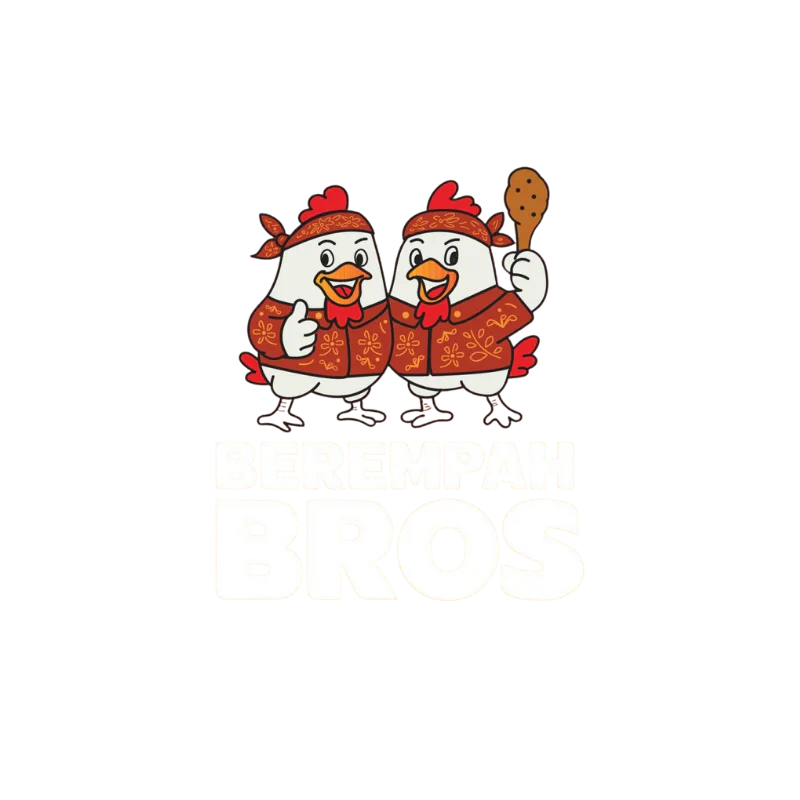

Familiar Flavours. Our Way.
We take inspiration from the flavours we know and love across Singapore and Southeast Asia, then give them our own Berempah spin.
We're not here to make food complicated.
We're here to make it delicious.
Berempah Bros
Born in Singapore. Inspired by the flavours we grew up with. Made for people who just want damn good food.
Berempah means spiced — food packed with rempah, aromatics and flavour.
But to us, it means a little more than that.
it means food that isn't shy.
Fragrant spices. Crispy bits. Fiery sambal. Rich coconut rice. Smoke from the grill. The kind of food where every part of the plate is fighting to be your favourite bite.
That's Berempah Bros.
Berempah Bros started from our love for the food we grew up eating. The flavours of Singapore and Southeast Asia are loud, diverse and unapologetic — sambal, coconut, spices, smoke, char and plenty of rempah. We wanted to build something around that.
Our starting point was the humble plate of nasi lemak. We took everything we loved about it and made it our own: fragrant coconut rice, punchy sambal, refreshing achar and, at the centre of it all, our signature Ayam Berempah.
What began with one plate has grown into different proteins, grilled dishes, new creations and Berempah Bros outlets across Singapore. But the idea hasn't changed.
Take familiar flavours. Put our spin on them. And make food we'd happily eat ourselves.
 the stall, somewhere past dinner rush
the stall, somewhere past dinner rush
 the crunch™
the crunch™
We take inspiration from the flavours we know and love across Singapore and Southeast Asia, then give them our own Berempah spin.
We're not here to make food complicated.
We're here to make it delicious.
More aromatics. More rempah. Better sambal. Proper char. Crispy bits in every corner.
If there's an opportunity to make something tastier, we'll probably take it. Because at the end of the day, there's really only one question that matters:
is it shiok?
We believe great food doesn't need white tablecloths or a special occasion. It can come on a plate of coconut rice in a hawker centre.
We bring the same obsession with ingredients, technique and flavour to food that's casual, accessible and meant to be eaten again and again.
No fuss. No pretence. Just damn good food.

To make your next meal damn shiok.
The Berempah Bros represent everything we love about our food — bold flavours, big personalities and never taking ourselves too seriously.
spice. crunch. shiok.
It all starts with our signature Berempah. Marinated with aromatics and spices, cooked until beautifully crisp and served alongside fragrant coconut rice, sambal, achar and all the good stuff.
From our signature Ayam Berempah to different proteins, grilled favourites and sides — there's always something worth coming back for.
Multiple locations. Same obsession with flavour. View our outlets, opening hours and directions.
Get Berempah Bros delivered, order ahead for takeaway or sort out the whole office lunch.
delivery. pick-up. bulk orders. all available through Oddle.Good food doesn't happen without good people. We're growing, and we're always looking for people who want to grow with us.
experience is great. attitude matters more.
Got something to say? For general enquiries, collaborations, media, business opportunities or anything else Berempah Bros related, get in touch.